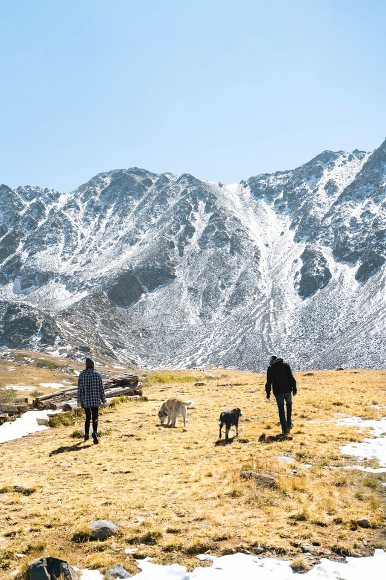
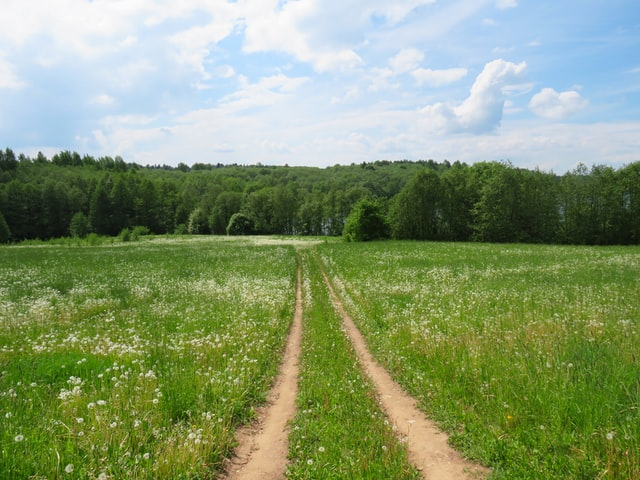
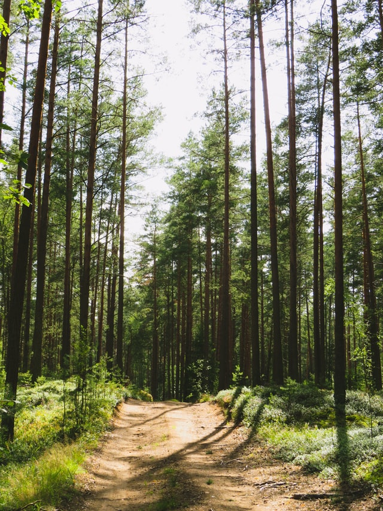
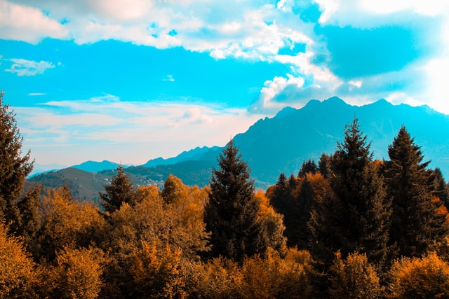
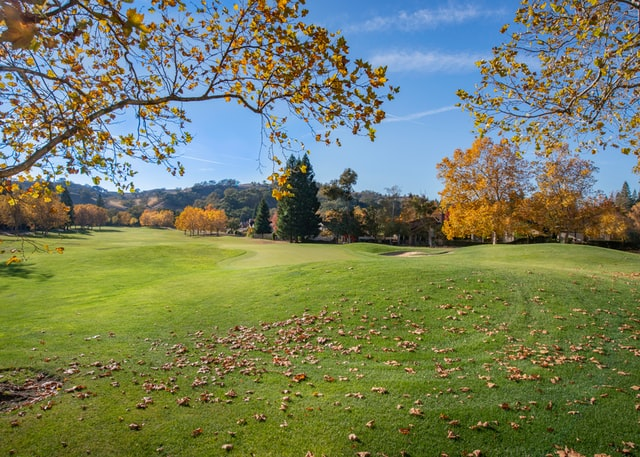
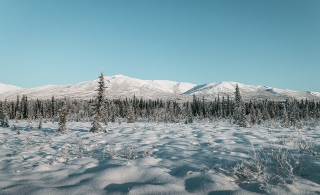
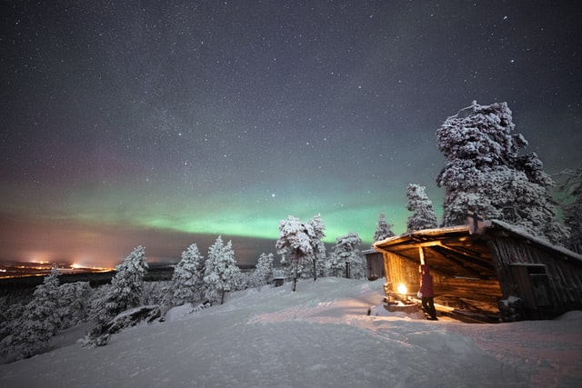

Kevät on vuodenaika talven jälkeen ennen kesää. Vanhan tähtitieteellisen määritelmän mukaan pohjoisen pallonpuoliskon kevään katsotaan alkavan kevätpäiväntasauksena 20. tai 21. maaliskuuta ja päättyvän kesäpäivänseisauksena 21. tai 22. kesäkuuta. Eteläisellä pallonpuoliskolla vastaavasti kevät alkaa tähtitieteellisellä määritelmällä 22. tai 23. syyskuuta ja päättyy 21. tai 22. joulukuuta. (Lähde: Wikipedia, 2021). Termisen kevään alkaminen on lämpötilaan perustuva määritelmä, jolloin katsotaan enemmän "nollalämpötilaa". Maataloudelle esimerkiksi on tärkeämpää terminen kasvukausi, jolloin kavukausi todella alkaa. Se alkaa hieman myöhemmin kuin terminen kevät , valaisee Ilmatieteen laitoksen ilmastopalvelun meteorologi Pauli Jokinen. (Lähde: Yle uutiset, 2015)

Kesä eli suvi on vuodenaika kevään ja syksyn välissä. Kesä on vuodenajoista lämpimin, koska Maa on silloin kallistunut niin, että Aurinko säteilee maan pinnalle jyrkemmässä kulmassa kuin muina vuodenaikoina. Pohjoisella pallonpuoliskolla kesäkuukausiksi lasketaan tavallisesti kesä-, heinä- ja elokuu, eteläisellä pallonpuoliskolla joulu-, tammi- ja helmikuu. (Lähde: Wikipedia, 2021). Kesällä yötön yö alkaa Utsjoella 18. toukokuuta, ja ensimmäinen päivä yöttömän yön jälkeen on 28. heinäkuuta. (Lähde: Wikipedia, 2021).
 Syksy on yksi lauhkean ilmastovyöhykkeen neljästä vuodenajasta. Se on siirtymäaika kesästä talveen. Lauhkeassa ilmastossa syksyllä sato korjataan ja lehtipuut pudottavat lehtensä. Syksyllä päivät lyhenevät ja viilenevät verrattain hitaasti, mutta toisinaan viileneminen voi olla varsin nopeaa. Syksy-sanasta tunnetaan myös variantti syys, joka esiintyy usein yhdyssanan alkuosana, esimerkiksi sanoissa syyskuu ja syyspäiväntasaus. (Lähde: Wikipedia, 2021). Kolmen kuukauden tilastoissa syksyyn kuuluvat syys-, loka ja marraskuu. Termisen syksyn aikana vuorokauden keskilämpötila on +10 ja 0 asteen välillä. Lisätietoa termisten vuodenaikojen määrittämisestä löydät teematietoa-osiostamme. Syksyn aikana terminen kasvukausi päättyy ja myös ensimmäiset lumet satavat maahan talvea enteillen. (Lähde: Ilmatieteenlaitos, 2020).
 Talvi on yksi neljästä vuodenajasta. Tähtitieteessä se määritellään talvipäivänseisauksesta kevätpäiväntasaukseen; klimatologiassa eli ilmastotieteessä käytetään usein määritelmää joulukuun alusta helmikuun loppuun. Vastaavasti eteläisen pallonpuoliskon talvi kattaa kesä-, heinä- ja elokuut. (Lähde: Wikipedia, 2021). Termisen talven aikana vuorokauden keskilämpötila pysyttelee nollan alapuolella, mutta pelkän pakkasen talvea meillä on Lapissakin ani harvoin. Maan etelä- ja länsiosien talviin kuuluvat myös pitkätkin leudon sään jaksot, kun Atlantilta lauhaa suojasäätä tuovat matalapaineet. Silloin on yleensä pilvistä, sataa vettä tai räntää ja tuulee kovaa. (Lähde: Ilmatieteenlaitos, 2021).
 Kesä on ylivoimaisesti oma suosikki vuodenaikani, koska pidän lämpimästä kelistä ja luonnosta kesällä. Toki syksyn ruska-aika ja luonnon värit ovat silloin ovat melkein sanoin kuvaamattomia. - Jani Kangas